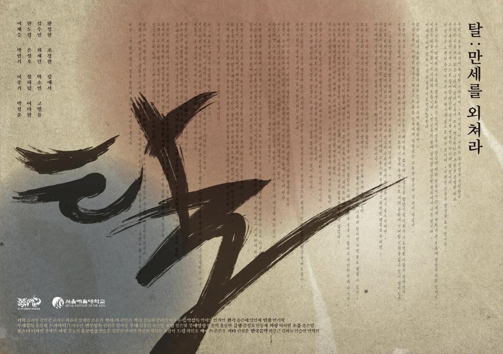
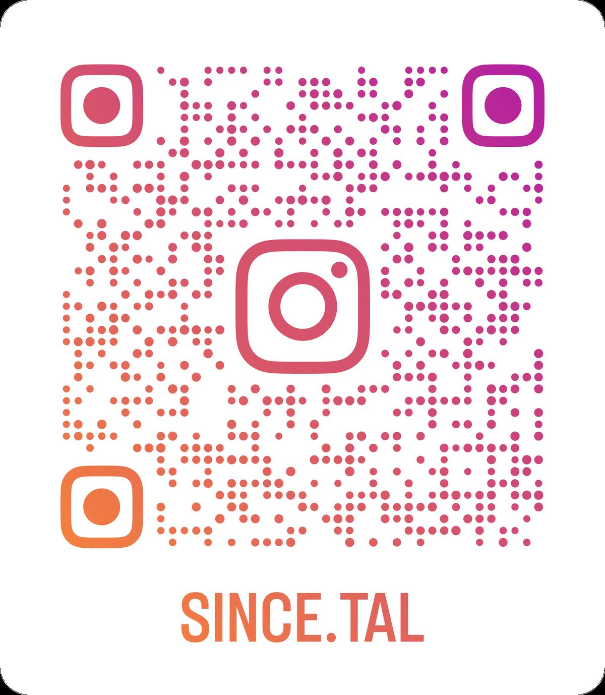

Young Creators' Original Musical · 2024
A unified costume direction inspired by traditional Korean visual motifs — designed across three consecutive performance runs at multiple venues.

Background & Objective
For this production, I developed a unified costume direction inspired by traditional Korean visual motifs — designing colour palettes and styling details tailored to each performer.
Working under a highly compressed timeline and across multiple venues, I built a coherent aesthetic that enhanced narrative clarity and stage presence throughout three consecutive runs.
As no dedicated hair/makeup team was assigned, I also took full responsibility for hair styling and makeup direction across the production.
"A production requiring creative design, historical reference, and practical execution — delivered across three consecutive runs at Seoul, Yongin, and Namsan."
Performance Venues
Red Gate Theatre — Seoul Arts Yongin Poeun Art Hall Namsan Drama CentreProcess
Costume Design & Fabrication
Reviewed each character's role and historical context to determine the appropriate costume direction. Selected base garments matching the period aesthetic and modified them to fit each performer's movement and personality. Designed and fabricated custom waistbands for all cast members to emphasise the vibrancy of the Sadangpae — considering each costume's tone, fabric texture, and colour palette to create visual unity. Also crafted mituri-style footwear and incorporated traditional silhouettes.
Costume adjustments, waistband fabrication, and period-style detailing
Quick-Change Management
Created a comprehensive quick-change chart for all cast members — mapping each performer's entrance/exit timing, costume transitions, backstage positions, and assistance requirements. Critical moments were marked in red and organised scene-by-scene. This system was used across all three venues, including the transfer performance at Yongin Citizen's Culture Hall.
Quick-change chart coordinating backstage transitions across venues
Hair & Makeup Direction
Developed hairstyles that could visually support character shifts while remaining practical for rapid backstage transitions. For the Sadangpae troupe, designed braided styles reflecting the period setting and complementing the costume silhouettes — crafted to withstand movement-heavy choreography.
Braided hairstyles designed to match period costumes and support multi-role transitions
Multi-Venue Coordination
Organised the full rehearsal and performance schedule across all venues — coordinating fittings, quick-changes, and costume transportation during overlapping productions. Ensured consistent backstage operations across three different stage environments.
Full production timeline across Seoul Arts University, Yongin, and Namsan
Result
Achievements & Reflections
Through this project, I strengthened my ability to deliver cohesive visual design under time pressure — selecting, modifying, and fabricating costumes that aligned with each performer's role and the traditional aesthetic of Tal: Shout for Freedom.
By designing custom waistbands, period-appropriate details, and braided hairstyles, I established a unified visual identity for the Sadangpae ensemble while supporting performer comfort and movement.
Managing quick-change operations, backstage transitions, and hair/makeup direction across multiple venues further developed my adaptability and coordination skills — preparing me for larger-scale productions and multidisciplinary environments.
